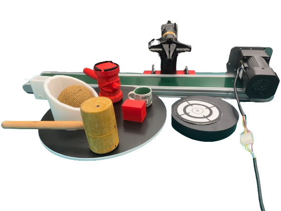

A pose can become stale.
By the time a command is executed, the hammer has moved. Reacting to its current pose leaves the robot chasing a contact that has already passed.
PHYSICAL FUTURES → FEASIBLE CONTACT
Physics-Aware Object-Centric SE(3) Forecasting
for Real-Time Proactive Dynamic Grasping
1 The Hong Kong Polytechnic University · 2 Technical University of Munich
THE SHORT VERSION
A robot does not need to imagine an entire future scene to catch a moving object. It needs to know where the object will be, how it will be oriented, and whether contact is reachable. PAF-Grasp forecasts that compact physical future in SE(3), then selects a feasible moment to act.
SE(3) forecasting latency
Average real-world success
Gain over the reactive baseline
Reported in the supplied manuscript. Real-world average across catching, conveyor, and turntable tasks.
SEE IT IN MOTION
PAF-Grasp / Introduction01 / THE IDEA
Motion and system delay make the current pose a moving target. Predicting the contact-time state turns reactive tracking into proactive interception.
Concept illustration of forecast-guided contact. Robot geometry and motion are schematic.
By the time a command is executed, the hammer has moved. Reacting to its current pose leaves the robot chasing a contact that has already passed.
Forecast the hammer's future position and orientation. Move the robot-mounted target to a reachable future contact state before the hammer arrives. The target meets the striking point at the right moment.
02 / THE METHOD
Object-centric prediction meets robot-specific feasibility. A compact physical state connects perception, dynamics, and action.
Recover metric geometry and an approximate inertia prior from an anchor RGB-D image. Track the object's recent SE(3) pose history online.
RGB-D → rigid-body stateEncode motion history, estimate initial velocities, and integrate a Newton–Euler-structured neural ODE to predict future position and rotation.
Continuous-time dynamicsPropagate the contact frame along the forecast. Choose a future target that satisfies kinematic, workspace, and timing constraints.
Reachable contact state03 / IN THE REAL WORLD
Catch in flight. Intercept in motion. Grasp at the right phase.
See contact-time forecasting at work.
Forecast a tossed ball's contact point before the opportunity passes.
Meet a sliding object at a reachable future position, rather than trailing behind.
Predict position and orientation to meet a rotating cup handle at contact time.
Representative footage from the project introduction. Success rates come from 50 separate evaluation trials per method, per task.

THE PHYSICAL SETUP
One experimental platform, three motion families. RGB-D sensing keeps the object's SE(3) history up to date for closed-loop interception.
04 / THE EVIDENCE
50 evaluation trials per method, per task. Same fixed RTC hyperparameters across tasks.
| Setting / Method | Catch | Conveyor | Turntable | Ramp | Average |
|---|---|---|---|---|---|
| Real world · π₀.₅ + RTC | 0 | 34 | 12 | — | 15.3 |
| Real world · PAF-Grasp | 64 | 78 | 60 | — | 67.3 |
| Simulation · π₀ | 6 | 50 | 16 | 26 | 24.5 |
| Simulation · PAF-Grasp | 56 | 78 | 62 | 52 | 62.0 |
05 / WHAT SHOULD WE PREDICT?
For interception, a visually plausible future is not enough. The useful prediction is a metrically accurate contact state, available in time to act.
This evaluates representation suitability, not an input-matched comparison: video models use single-image prompting; PAF-Grasp uses tracked SE(3) histories and a recovered mesh. See Section 4.2.
| Method | Mask mIoU ↑ | Time (s) ↓ |
|---|---|---|
| CogVideoX | 0.0036 | 180 |
| Wan 2.2 | 0.0225 | 41 |
| Veo 3.1 | 0.0334 | 71 |
| Kling 3.0 | 0.0466 | 30 |
| PAF-Grasp | 0.2762 | 0.015 |
Proactive dynamic grasping requires robots to predict the future state at which physical contact will occur, rather than reacting to the currently observed object pose. But what future must the robot predict, and at what level of abstraction? We argue that contact-relevant rigid-body state in SE(3) is a compact task-sufficient abstraction for this problem: it directly determines where and when the robot should establish contact, without requiring visually complete future scenes.
This insight leads to a lightweight object-centric forecast-then-select framework that predicts future rigid-body trajectories from short pose histories and uses a reachability-aware interception selector to choose feasible contact states under kinematic and timing constraints. Trained with randomized physics simulation over primitive shapes, the forecaster transfers to real objects once their metric geometry and SE(3) state histories are recovered.
Experiments across simulation and real-world dynamic grasping tasks show that our framework improves the average success rate from 24.5% to 62.0% in simulation, and from 15.3% to 67.3% in real-world catching, conveyor, and turntable interception. The SE(3) forecaster runs in 15 ms, orders of magnitude faster than dense visual future prediction, enabling real-time contact decision making. Our results suggest that effective proactive grasping does not require imagining the entire future scene. Instead, predicting the compact physical future that determines contact provides an effective and practical abstraction for real-time dynamic grasping.
The framework focuses on short-horizon, continuous motion of a single rigid body. Deformable objects, coupled interactions, collisions, and contact transitions require richer dynamics representations. Performance also depends on velocity estimation, RGB-D pose tracking, approximate inertia, and the robot's reachable workspace.
Classical predictors remain competitive when motion structure is known: they match the learned forecaster on conveyor success and perform better on ramp success in the matched noisy-input study. PAF-Grasp uses a common physics-structured architecture, with one checkpoint trained for each motion family.
@misc{zhou2026pafgrasp,
title={Physics-Aware Object-Centric SE(3) Forecasting
for Real-Time Proactive Dynamic Grasping},
author={Zhou, Yirui and Xu, Hongli and Zheng, Ying
and Wang, Yi and Chau, Lap-Pui},
year={2026},
note={Manuscript}
}